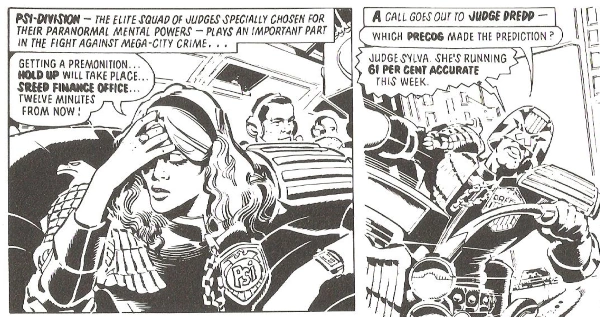

Reprints of the Daily Star Dredd strips, used for filling up the page count on specials.
Art by Ron Smith
| Story Title | Parts | Pages | w indicates a wraparound coverCovers | Year(s) | Issues | Writer | Artist | Colourist | Letterer |
|---|---|---|---|---|---|---|---|---|---|
| [unknown] | 1 | 1 | 0 | 1982 | SFS5 | unknown | Ron Smith | [b&w] | unknown |
| Fear of the Machine | 1 | 1 | 0 | 1982 | SFS5 | unknown | Ron Smith | [b&w] | unknown |
| Smoking's a Fag | 1 | 1 | 0 | 1982 | SFS5 | unknown | Ron Smith | [b&w] | unknown |
| Futsies and Wheelies | 1 | 1 | 0 | 1982 | SFS5 | unknown | Ron Smith | [b&w] | unknown |
| Careless Is Stateless | 1 | 1 | 0 | 1982 | SFS5 | unknown | Ron Smith | [b&w] | unknown |
| The Jetball Jitters | 1 | 1 | 0 | 1982 | SFS5 | unknown | Ron Smith | [b&w] | unknown |
| Ticket to Titan | 1 | 1 | 0 | 1983 | SFS6 | John Wagner | Ron Smith | [b&w] | unknown |
| The Bouncer | 1 | 1 | 0 | 1983 | SFS6 | John Wagner | Ron Smith | [b&w] | unknown |
| Catch a Falling Perp | 1 | 1 | 0 | 1983 | SFS6 | John Wagner | Ron Smith | [b&w] | unknown |
| Target: Chief Judge | 1 | 1 | 0 | 1983 | SFS6 | John Wagner | Ron Smith | [b&w] | unknown |
| Goin' Straight | 1 | 1 | 0 | 1983 | SFS6 | John Wagner | Ron Smith | [b&w] | unknown |
| Pleasure Island | 1 | 1 | 0 | 1983 | SFS6 | John Wagner | Ron Smith | [b&w] | unknown |
| Don't Interfere With the Law! | 1 | 1 | 0 | 1983 | 2KA'84 | John Wagner | Ron Smith | [b&w] | Tom Frame |
| Robo-Robbery! | 1 | 1 | 0 | 1983 | 2KA'84 | John Wagner | Ron Smith | [b&w] | Tom Frame |
| Lawmaster in Action! | 1 | 1 | 0 | 1983 | 2KA'84 | John Wagner | Ron Smith | [b&w] | Tom Frame |
| Crime Blitz! | 1 | 1 | 0 | 1983 | 2KA'84 | John Wagner | Ron Smith | [b&w] | Tom Frame |
| Even Death Is No Escape! | 1 | 1 | 0 | 1983 | 2KA'84 | John Wagner | Ron Smith | [b&w] | Tom Frame |
| Pwesenting Walter! | 1 | 1 | 0 | 1983 | 2KA'84 | John Wagner | Ron Smith | [b&w] | Tom Frame |
| Jeepers! Peepers! | 1 | 1 | 0 | 1983 | JDA'84 | John Wagner | Ron Smith | [b&w] | Tom Frame |
| Two-Faced Trickster | 1 | 1 | 0 | 1983 | JDA'84 | John Wagner | Ron Smith | [b&w] | Tom Frame |
| Catcher in the Sky | 1 | 1 | 0 | 1983 | JDA'84 | John Wagner | Ron Smith | [b&w] | Tom Frame |
| The Apartment | 1 | 1 | 0 | 1983 | JDA'84 | John Wagner | Ron Smith | [b&w] | Tom Frame |
| Last Gasp for a Perp | 1 | 1 | 0 | 1983 | JDA'84 | John Wagner | Ron Smith | [b&w] | Tom Frame |
| To Hell - and Back | 1 | 1 | 0 | 1983 | JDA'84 | John Wagner | Ron Smith | [b&w] | Tom Frame |
| The Mega-Vision Song Contest | 1 | 1 | 0 | 1984 | SFS7 | Alan Grant John Wagnervarious | Ron Smith | <-- | unknown |
| Too Good to Last | 1 | 1 | 0 | 1984 | SFS7 | Alan Grant John Wagnervarious | Ron Smith | <-- | unknown |
| Spray It With Flowers | 1 | 1 | 0 | 1984 | SFS7 | Alan Grant John Wagnervarious | Ron Smith | [b&w] | unknown |
| Denizens of the Deep | 1 | 1 | 0 | 1984 | SFS7 | Alan Grant John Wagnervarious | Ron Smith | [b&w] | unknown |
| Don't Lose Your Head | 1 | 1 | 0 | 1984 | SFS7 | Alan Grant John Wagnervarious | Ron Smith | [b&w] | unknown |
| Dante's Inferno | 1 | 1 | 0 | 1984 | SFS7 | Alan Grant John Wagnervarious | Ron Smith | [b&w] | unknown |
| Sweet Justice | 1 | 1 | 0 | 1984 | 2KA'85 | Alan Grant John Wagnervarious | Ron Smith | [b&w] | Tom Frame |
| Any Confessions | 1 | 1 | 0 | 1984 | 2KA'85 | Alan Grant John Wagnervarious | Ron Smith | [b&w] | Tom Frame |
| The Graduate | 1 | 1 | 0 | 1984 | 2KA'85 | Alan Grant John Wagnervarious | Ron Smith | [b&w] | Tom Frame |
| An Open & Closed Case | 1 | 1 | 0 | 1984 | 2KA'85 | Alan Grant John Wagnervarious | Ron Smith | [b&w] | Tom Frame |
| Driven to Crime | 1 | 1 | 0 | 1984 | 2KA'85 | Alan Grant John Wagnervarious | Ron Smith | [b&w] | Tom Frame |
| A Breach of the Law | 1 | 1 | 0 | 1984 | 2KA'85 | Alan Grant John Wagnervarious | Ron Smith | [b&w] | Tom Frame |
| Mega-City Fats | 1 | 1 | 0 | 1984 | JDA'85 | Alan Grant John Wagnervarious | Ron Smith | [b&w] | Tom Frame |
| No Cash for Max | 1 | 1 | 0 | 1984 | JDA'85 | Alan Grant John Wagnervarious | Ron Smith | [b&w] | Tom Frame |
| Stormy Weather | 1 | 1 | 0 | 1984 | JDA'85 | Alan Grant John Wagnervarious | Ron Smith | [b&w] | Tom Frame |
| People Express | 1 | 1 | 0 | 1984 | JDA'85 | Alan Grant John Wagnervarious | Ron Smith | [b&w] | Tom Frame |
| With This Ring I Thee Jail | 1 | 1 | 0 | 1984 | JDA'85 | Alan Grant John Wagnervarious | Ron Smith | [b&w] | Tom Frame |
| Alientown | 1 | 1 | 0 | 1984 | JDA'85 | Alan Grant John Wagnervarious | Ron Smith | [b&w] | Tom Frame |
| Test of the Law | 1 | 1 | 0 | 1984 | JDA'85 | Alan Grant John Wagnervarious | Ron Smith | [b&w] | Tom Frame |
| Greek Vibrations | 1 | 1 | 0 | 1984 | JDA'85 | Alan Grant John Wagnervarious | Ron Smith | [b&w] | Tom Frame |
| Think No Evil | 1 | 1 | 0 | 1984 | JDA'85 | Alan Grant John Wagnervarious | Ron Smith | [b&w] | Tom Frame |
| Criminal Heights | 1 | 1 | 0 | 1984 | JDA'85 | Alan Grant John Wagnervarious | Ron Smith | [b&w] | Tom Frame |
| The Last Resort | 1 | 1 | 0 | 1984 | JDA'85 | Alan Grant John Wagnervarious | Ron Smith | [b&w] | Tom Frame |
| Clean Air Cop | 1 | 1 | 0 | 1984 | JDA'85 | Alan Grant John Wagnervarious | Ron Smith | [b&w] | Tom Frame |
| Small Arms Combat | 1 | 1 | 0 | 1985 | SFS8 | unknown | Ron Smith | <-- | unknown |
| Killjoy of the Year | 1 | 1 | 0 | 1985 | SFS8 | unknown | Ron Smith | <-- | unknown |
| Strip Search | 1 | 1 | 0 | 1985 | SFS8 | unknown | Ron Smith | [b&w] | unknown |
| Bat Blitz | 1 | 1 | 0 | 1985 | SFS8 | unknown | Ron Smith | [b&w] | unknown |
| Great Moments in Science (No.471) | 1 | 1 | 0 | 1985 | SFS8 | unknown | Ron Smith | [b&w] | unknown |
| Nine … Ten … Out! | 1 | 1 | 0 | 1985 | SFS8 | unknown | Ron Smith | [b&w] | unknown |
| Missile Mania | 1 | 1 | 0 | 1985 | 2KA'86 | Alan Grant John Wagnervarious | Ron Smith | [b&w] | Tom Frame |
| Unhappy Returns | 1 | 1 | 0 | 1985 | 2KA'86 | Alan Grant John Wagnervarious | Ron Smith | [b&w] | Tom Frame |
| Hoonz Boonz | 1 | 1 | 0 | 1985 | 2KA'86 | Alan Grant John Wagnervarious | Ron Smith | [b&w] | Tom Frame |
| Criminal Error | 1 | 1 | 0 | 1985 | 2KA'86 | Alan Grant John Wagnervarious | Ron Smith | [b&w] | Tom Frame |
| Danger Ux Nuke | 1 | 1 | 0 | 1985 | 2KA'86 | Alan Grant John Wagnervarious | Ron Smith | [b&w] | Tom Frame |
| The Wall Game | 1 | 1 | 0 | 1985 | 2KA'86 | Alan Grant John Wagnervarious | Ron Smith | [b&w] | Tom Frame |
| Block Wars | 1 | 1 | 0 | 1985 | JDA'86 | Alan Grant John Wagnervarious | Ron Smith | [b&w] | unknown |
| The Mummified Lounge Massacre | 1 | 1 | 0 | 1985 | JDA'86 | Alan Grant John Wagnervarious | Ron Smith | [b&w] | unknown |
| Mistaken Identity | 1 | 1 | 0 | 1985 | JDA'86 | Alan Grant John Wagnervarious | Ron Smith | [b&w] | unknown |
| Indoor Fireworks | 1 | 1 | 0 | 1985 | JDA'86 | Alan Grant John Wagnervarious | Ron Smith | [b&w] | unknown |
| The Greatest | 1 | 1 | 0 | 1985 | JDA'86 | Alan Grant John Wagnervarious | Ron Smith | [b&w] | unknown |
| Strip Search | 1 | 1 | 0 | 1985 | JDA'86 | Alan Grant John Wagnervarious | Ron Smith | [b&w] | unknown |
| Teething Troubles | 1 | 1 | 0 | 1985 | JDA'86 | Alan Grant John Wagnervarious | Ron Smith | [b&w] | unknown |
| Murder by Mistake | 1 | 1 | 0 | 1985 | JDA'86 | Alan Grant John Wagnervarious | Ron Smith | [b&w] | unknown |
| Food for Thought | 1 | 1 | 0 | 1985 | JDA'86 | Alan Grant John Wagnervarious | Ron Smith | [b&w] | unknown |
| Dead Easy | 1 | 1 | 0 | 1985 | JDA'86 | Alan Grant John Wagnervarious | Ron Smith | [b&w] | unknown |
| Test Failure | 1 | 1 | 0 | 1985 | JDA'86 | Alan Grant John Wagnervarious | Ron Smith | [b&w] | unknown |
| Monkey Business | 1 | 1 | 0 | 1985 | JDA'86 | Alan Grant John Wagnervarious | Ron Smith | [b&w] | unknown |
| Midnight Mugger | 1 | 1 | 0 | 1986 | SFS9 | unknown | Ron Smith | [b&w] | unknown |
| Ancient Error | 1 | 1 | 0 | 1986 | SFS9 | unknown | Ron Smith | [b&w] | unknown |
| War and Peace | 1 | 1 | 0 | 1986 | SFS9 | unknown | Ron Smith | [b&w] | unknown |
| Hot On the Trail | 1 | 1 | 0 | 1986 | SFS9 | unknown | Ron Smith | [b&w] | unknown |
| Slimey Gums (1) | 1 | 1 | 0 | 1986 | SFS9 | unknown | Ron Smith | [b&w] | unknown |
| Slimey Gums (2) | 1 | 1 | 0 | 1986 | SFS9 | unknown | Ron Smith | [b&w] | unknown |
156Mickey the Mouth 1 | 1 | 1 | 0 | 1986 | 2KA'87 | John Wagner | Ron Smith | [b&w] | unknown |
157Mickey the Mouth 2 | 1 | 1 | 0 | 1986 | 2KA'87 | John Wagner | Ron Smith | [b&w] | unknown |
158Mickey the Mouth 3 | 1 | 1 | 0 | 1986 | 2KA'87 | John Wagner | Ron Smith | [b&w] | unknown |
159Mickey the Mouth 4 | 1 | 1 | 0 | 1986 | 2KA'87 | John Wagner | Ron Smith | [b&w] | unknown |
166Seeing Is Believing | 1 | 1 | 0 | 1986 | 2KA'87 | John Wagner | Ron Smith | [b&w] | unknown |
168Hover Hotspot | 1 | 1 | 0 | 1986 | 2KA'87 | John Wagner | Ron Smith | [b&w] | unknown |
160Hoppit | 1 | 1 | 0 | 1986 | 2KA'87 | John Wagner | Ron Smith | [b&w] | unknown |
161Last Dance | 1 | 1 | 0 | 1986 | 2KA'87 | John Wagner | Ron Smith | [b&w] | unknown |
169Gross Error | 1 | 1 | 0 | 1986 | 2KA'87 | John Wagner | Ron Smith | [b&w] | unknown |
175All Quiet In MC1 | 1 | 1 | 0 | 1986 | 2KA'87 | John Wagner | Ron Smith | [b&w] | unknown |
170Big Bad Wolf? | 1 | 1 | 0 | 1986 | 2KA'87 | John Wagner | Ron Smith | [b&w] | unknown |
167Leg Stumps | 1 | 1 | 0 | 1986 | 2KA'87 | John Wagner | Ron Smith | [b&w] | unknown |
| [Concealing Information] | 1 | 1 | 0 | 1986 | JDA'87 | John Wagner | Ron Smith | [b&w] | Tom Frame |
| Hit or Be Hit | 1 | 1 | 0 | 1986 | JDA'87 | John Wagner | Ron Smith | [b&w] | Tom Frame |
| Baldies | 1 | 1 | 0 | 1986 | JDA'87 | John Wagner | Ron Smith | [b&w] | Tom Frame |
| Just Another Sniper | 1 | 1 | 0 | 1986 | JDA'87 | John Wagner | Ron Smith | [b&w] | Tom Frame |
| Tomorrow's Perp | 1 | 1 | 0 | 1986 | JDA'87 | John Wagner | Ron Smith | [b&w] | Tom Frame |
| All You Need Is a Ladder | 1 | 1 | 0 | 1986 | JDA'87 | John Wagner | Ron Smith | [b&w] | Tom Frame |
| The Price Is Wrong | 1 | 1 | 0 | 1986 | JDA'87 | John Wagner | Ron Smith | [b&w] | Tom Frame |
| Grey Flannel Con | 1 | 1 | 0 | 1986 | JDA'87 | John Wagner | Ron Smith | [b&w] | Tom Frame |
| Bionic Bliss | 1 | 1 | 0 | 1986 | JDA'87 | John Wagner | Ron Smith | [b&w] | Tom Frame |
| Cyborg | 1 | 1 | 0 | 1986 | JDA'87 | John Wagner | Ron Smith | [b&w] | Tom Frame |
| Electric Nightmares | 1 | 1 | 0 | 1986 | JDA'87 | John Wagner | Ron Smith | [b&w] | Tom Frame |
| The Wisdom of Dredd | 1 | 1 | 0 | 1986 | JDA'87 | John Wagner | Ron Smith | [b&w] | Tom Frame |
| [Noise Pollution] | 1 | 1 | 0 | 1987 | SFS10 | Alan Grant John Wagnervarious | Ron Smith | [b&w] | unknown |
| Rude Discovery | 1 | 1 | 0 | 1987 | SFS10 | Alan Grant John Wagnervarious | Ron Smith | [b&w] | unknown |
| Tough Nuts | 1 | 1 | 0 | 1987 | SFS10 | Alan Grant John Wagnervarious | Ron Smith | [b&w] | unknown |
| Blow Up | 1 | 1 | 0 | 1987 | SFS10 | Alan Grant John Wagnervarious | Ron Smith | [b&w] | unknown |
246[Sponsored Law] | 1 | 1 | 0 | 1987 | 2KA'88 | John Wagner | Ron Smith | [b&w] | unknown |
2544th July | 1 | 1 | 0 | 1987 | 2KA'88 | John Wagner | Ron Smith | [b&w] | unknown |
248Lovers' Lane | 1 | 1 | 0 | 1987 | 2KA'88 | John Wagner | Ron Smith | [b&w] | unknown |
247Disappearing Perp | 1 | 1 | 0 | 1987 | 2KA'88 | John Wagner | Ron Smith | [b&w] | unknown |
244Golden Oldie | 1 | 1 | 0 | 1987 | 2KA'88 | John Wagner | Ron Smith | [b&w] | unknown |
~Nursery Crimes | 1 | 1 | 0 | 1987 | 2KA'88 | John Wagner | Ron Smith | [b&w] | unknown |
245Legal Costs | 1 | 1 | 0 | 1987 | 2KA'88 | John Wagner | Ron Smith | [b&w] | unknown |
253Fishy Business | 1 | 1 | 0 | 1987 | 2KA'88 | John Wagner | Ron Smith | [b&w] | unknown |
249World Cup 1 | 1 | 1 | 0 | 1987 | 2KA'88 | John Wagner | Ron Smith | [b&w] | unknown |
250World Cup 2 | 1 | 1 | 0 | 1987 | 2KA'88 | John Wagner | Ron Smith | [b&w] | unknown |
255Tough On the Streets | 1 | 1 | 0 | 1987 | 2KA'88 | John Wagner | Ron Smith | [b&w] | unknown |
251Small Mouth | 1 | 1 | 0 | 1987 | 2KA'88 | John Wagner | Ron Smith | [b&w] | unknown |
232[Adjoining Cubes] | 1 | 1 | 0 | 1987 | JDA'88 | John Wagner | Ron Smith | [b&w] | unknown |
| Joe's Soap Story | 1 | 1 | 0 | 1987 | JDA'88 | John Wagner | Ron Smith | [b&w] | unknown |
242Back to the Drawing Board | 1 | 1 | 0 | 1987 | JDA'88 | John Wagner | Ron Smith | [b&w] | unknown |
243Of Cakes and Gaol | 1 | 1 | 0 | 1987 | JDA'88 | John Wagner | Ron Smith | [b&w] | unknown |
| School for High-Flyers | 1 | 1 | 0 | 1987 | JDA'88 | John Wagner | Ron Smith | [b&w] | unknown |
239Toothless Threat | 1 | 1 | 0 | 1987 | JDA'88 | John Wagner | Ron Smith | [b&w] | unknown |
235A Glob Too Far | 1 | 1 | 0 | 1987 | JDA'88 | John Wagner | Ron Smith | [b&w] | unknown |
236Sitting Pretty | 1 | 1 | 0 | 1987 | JDA'88 | John Wagner | Ron Smith | [b&w] | unknown |
240In Sickness and Health | 1 | 1 | 0 | 1987 | JDA'88 | John Wagner | Ron Smith | [b&w] | unknown |
| Justice From Above | 1 | 1 | 0 | 1987 | JDA'88 | John Wagner | Ron Smith | [b&w] | unknown |
| Princely Error | 1 | 1 | 0 | 1987 | JDA'88 | John Wagner | Ron Smith | [b&w] | unknown |
238Silver's Iron Rule | 1 | 1 | 0 | 1987 | JDA'88 | John Wagner | Ron Smith | [b&w] | unknown |
| Weirdies | 1 | + 1 credit pages13 | 0 | 1988 | Reprints: M3.58‑M3.59JDMS1 | Alan Grant John Wagnervarious | Ian Gibson | [b&w] | unknown |
1‑65Alien Tongues | 65 | 13 | 0 | 1988 | 2KA'89 | Alan Grant John Wagnervarious | Ron Smith | [b&w] | unknown |
| Pyro | 65 | 13 | 0 | 1988 | JDA'89 | Alan Grant John Wagnervarious | Ron Smith | [b&w] | unknown |
Linked to The Mean MachineThe Mean Machine | 4 | 13 | 0 | 1988 | Reprints: M3.50‑M3.51590-593 | Alan Grant John Wagnervarious | Ian Gibson | [b&w] | unknown |
| Bride of Death | 3 | 14 | 0 | 1988-1989 | Reprints: M3.54‑M3.55606-608 | Alan Grant John Wagnervarious | Ian Gibson | [b&w] | unknown |
| A Guide to Mega-City Law | 4 | 16 | 0 | 1989 | Reprints: M3.56‑M3.57619-622 | Alan Grant John Wagnervarious | Ian Gibson | [b&w] | unknown |
322‑399Vigilante | 78 | + 1 credit pages16 | 0 | 1989 | JDA'90 | Alan Grant John Wagnervarious | Ian Gibson | [b&w] | unknown |
| Crime of Passion | 1 | 9 | 0 | 1994 | Reprints: M3.60 (in 8 pages)SFS17 | Alan Grant John Wagnervarious | Barry Kitson | [b&w] | Gerry Lipp |
| The Undercity | 2 | 15 | M3.45: Jim Murray 1 | 1998 | M3.45-M3.46 | Alan Grant John Wagnervarious | Ian Gibson | [b&w] | unknown |
| Heartbeat | 2 | 15 | M3.48: Greg Staples 1 | 1998 | M3.47-M3.48 | Alan Grant John Wagnervarious | Ian Gibson | [b&w] | unknown |
| Smashball | 1 | 8 | 0 | 1998 | M3.49 | Gordon Rennie | Andrew Currie | [b&w] | unknown |
| The Cursed Earth | 2 | 15 | M3.53: Trevor Hairsine 1 | 1999 | M3.52-M3.53 | Alan Grant John Wagnervarious | Ian Gibson | [b&w] | unknown |
| Death of a Salesman | 2 | 15 | 0 | 1999-2000 | M2.61-M3.62 | Alan Grant John Wagnervarious | Mike Collins | [b&w] | unknown |
Five single‑page episodes.[unknown] | 1 | 5 | 0 | 2000 | M3.63 | Alan Grant John Wagnervarious | Ian Gibson | [b&w] | unknown |
| [Porky Welles] | 1 | 5 | 0 | 2003 | M203 | Alan Grant John Wagnervarious | Ian Gibson | [b&w] | unknown |
| [Traffic Hazard] | 1 | 5 | 0 | 2003 | M204 | Alan Grant John Wagnervarious | Ian Gibson | [b&w] | unknown |
| [Hypermart] | 1 | 5 | 0 | 2003 | M205 | Alan Grant John Wagnervarious | Ian Gibson | [b&w] | unknown |
| [Tinned Dog] | 1 | 5 | 0 | 2003 | M206 | Alan Grant John Wagnervarious | Ian Gibson | [b&w] | unknown |
| Criminal Error | 1 | 1 | 0 | 2014 | FCBD4 | Alan Grant John Wagnervarious | Ron Smith | [b&w] | unknown |
| Mutant Ventriloquist | 1 | 1 | 0 | 2014 | FCBD4 | Alan Grant John Wagnervarious | Ron Smith | [b&w] | unknown |
| Unhappy Returns | 1 | 1 | 0 | 2014 | FCBD4 | Alan Grant John Wagnervarious | Ron Smith | [b&w] | unknown |
| Rookie Test | 1 | 1 | 0 | 2014 | FCBD4 | Alan Grant John Wagnervarious | Ron Smith | [b&w] | unknown |
| [Geekus] | 1 | 0.5 | 0 | 2015 | FCBD5 | Alan Grant John Wagnervarious | Ron Smith | [b&w] | unknown |
| [Lenny da Vinci] | 1 | 0.5 | 0 | 2015 | FCBD5 | Alan Grant John Wagnervarious | Ron Smith | [b&w] | unknown |
| >> Features << | |||||||||
| Countdown to the Apocalypse War | 1 | 1 | 0 | 1985 | 2KA'86 | editorial | Reprint. Carlos Ezquerra | [b&w] | n/a |
| [Daily Star Dredd Intro] | 1 | 1 | 0 | 1986 | 2KA'87 | editorial | Reprint. Brian Bolland | [b&w] | n/a |
| Daily Dredd: The First Story | 1 | 1 | 0 | 1988 | 2KA'89 | editorial | Ron Smith | [b&w] | n/a |
| Dredd Does Seven Years | 1 | 1 | 0 | 1988 | 590 | editorial | unknown | [b&w] | n/a |
| year | episodes | pages |
| 1980 | 0 | 0 |
| 1981 | 0 | 0 |
| 1982 | 6 | 6 |
| 1983 | 18 | 18 |
| 1984 | 24 | 24 |
| 1985 | 24 | 24 |
| 1986 | 30 | 30 |
| 1987 | 28 | 28 |
| 1988 | 137 | 62 |
| 1989 | 83 | 36 |
| 1990 | 0 | 0 |
| 1991 | 0 | 0 |
| 1992 | 0 | 0 |
| 1993 | 0 | 0 |
| 1994 | 1 | 9 |
| 1995 | 0 | 0 |
| 1996 | 0 | 0 |
| 1997 | 0 | 0 |
| 1998 | 5 | 38 |
| 1999 | 3 | 23 |
| 2000 | 2 | 12 |
| 2001 | 0 | 0 |
| 2002 | 0 | 0 |
| 2003 | 4 | 20 |
| 2004 | 0 | 0 |
| 2005 | 0 | 0 |
| 2006 | 0 | 0 |
| 2007 | 0 | 0 |
| 2008 | 0 | 0 |
| 2009 | 0 | 0 |
| 2010 | 0 | 0 |
| 2011 | 0 | 0 |
| 2012 | 0 | 0 |
| 2013 | 0 | 0 |
| 2014 | 4 | 4 |
| 2015 | 2 | 1 |
| 2016 | 0 | 0 |
| 2017 | 0 | 0 |
Comic strip data (excludes other content):